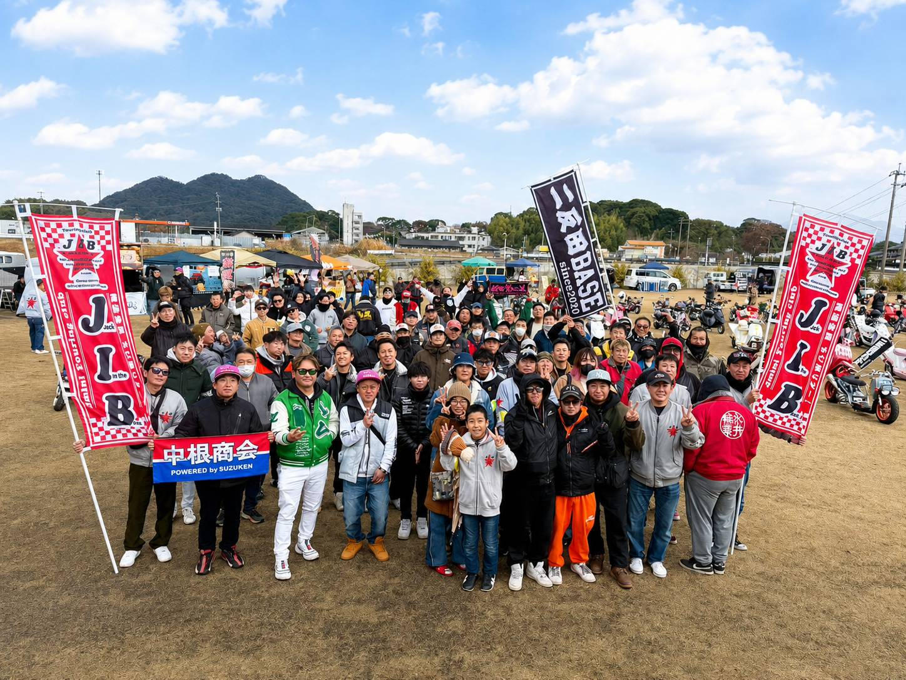
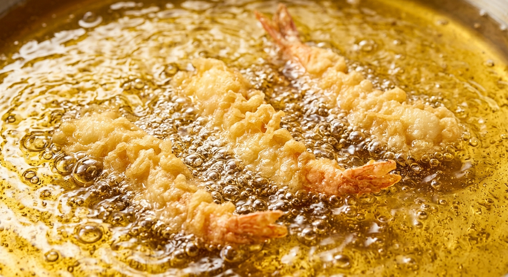
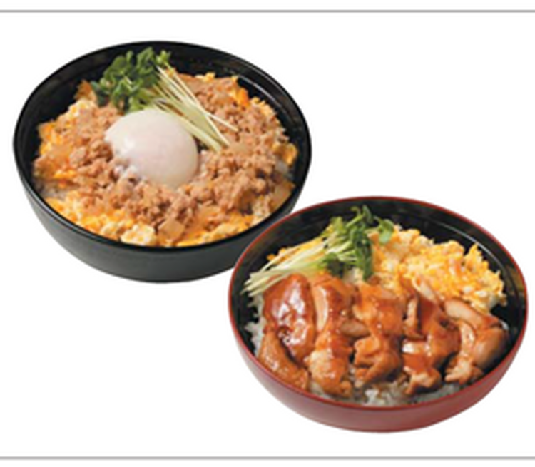
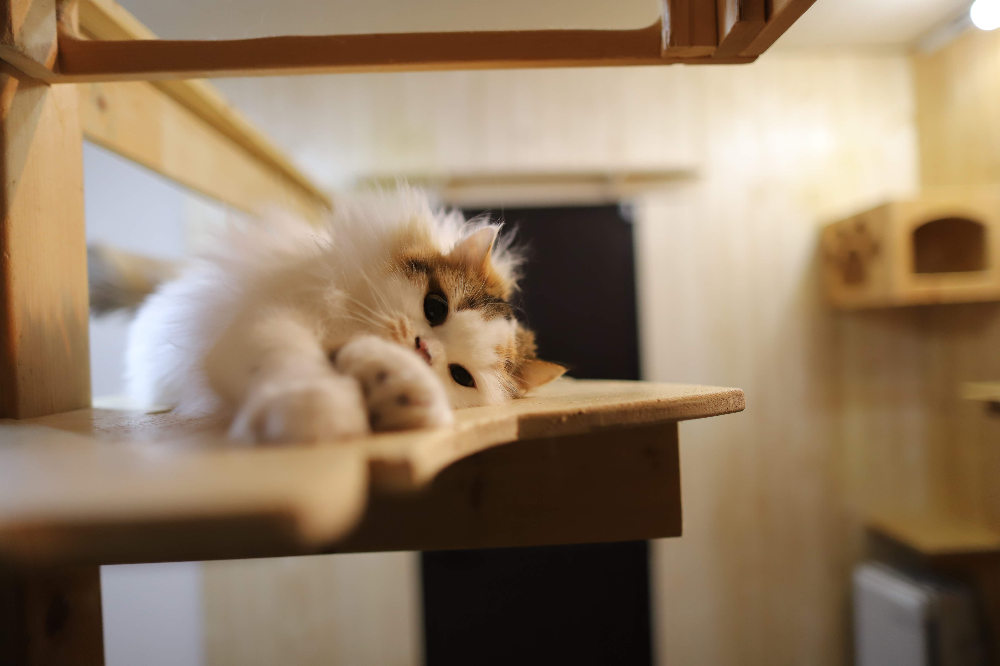
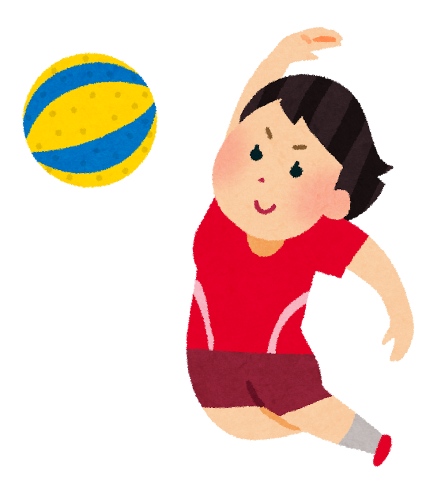

イベント4MINI BIKE MEETING in カホテラス
カホテラスで開催される4ミニバイクのミーティング。詳しい内容はこちらから確認できます。
📍 カホテラス | 🕒 開催情報を確認
詳細を見る2026年9月25日（金）は「第102回 飯塚花火大会」！遠賀川中之島から打ち上がる約6,000発の大花火と、地元の話題スポットをご紹介。

イベントカホテラスで開催される4ミニバイクのミーティング。詳しい内容はこちらから確認できます。
📍 カホテラス | 🕒 開催情報を確認
詳細を見る
グルメ職人が目の前で一品ずつ揚げる本格天ぷら店。福岡の銘柄鶏「華味鳥」を使ったささみのとり天は絶品！ごはん・味噌汁・茶碗蒸し付き。
📍 飯塚市勢田（国道200号沿い） | 🕒 11:00〜14:30 / 16:30〜20:30
詳細を見る
グルメ銘柄鶏「華味鳥」と野上養鶏場の「味宝卵」を使用。出汁のきいた味噌汁・茶碗蒸しセットで楽しむ絶品どんぶり。
📍 ゆめタウン飯塚 2F フードコート | 🕒 10:00〜21:00
詳細を見る
更新休止中1ページに数時間を費やし、食事からトイレケアまで徹底的にこだわり抜いた愛猫ブログ。※現在は更新休止中のため問い合わせ等は受け付けておりません。
📍 ウェブサイト（過去ログ） | 🕒 アーカイブ公開中
詳細を見る惜しみない情熱を注ぐご主人の作る絶品たこ焼き。スマートボタンによるリアルタイム営業案内連携テスト中。
📍 飯塚市仁保 | 🕒 10:00 〜 19:00（毎月第1・第3水曜定休）
詳細を見る
関係者専用ソフトバレーイベント専用特設サイト。（※関係者専用・要パスワード）
📍 飯塚市内 | 🕒 2026年10月18日